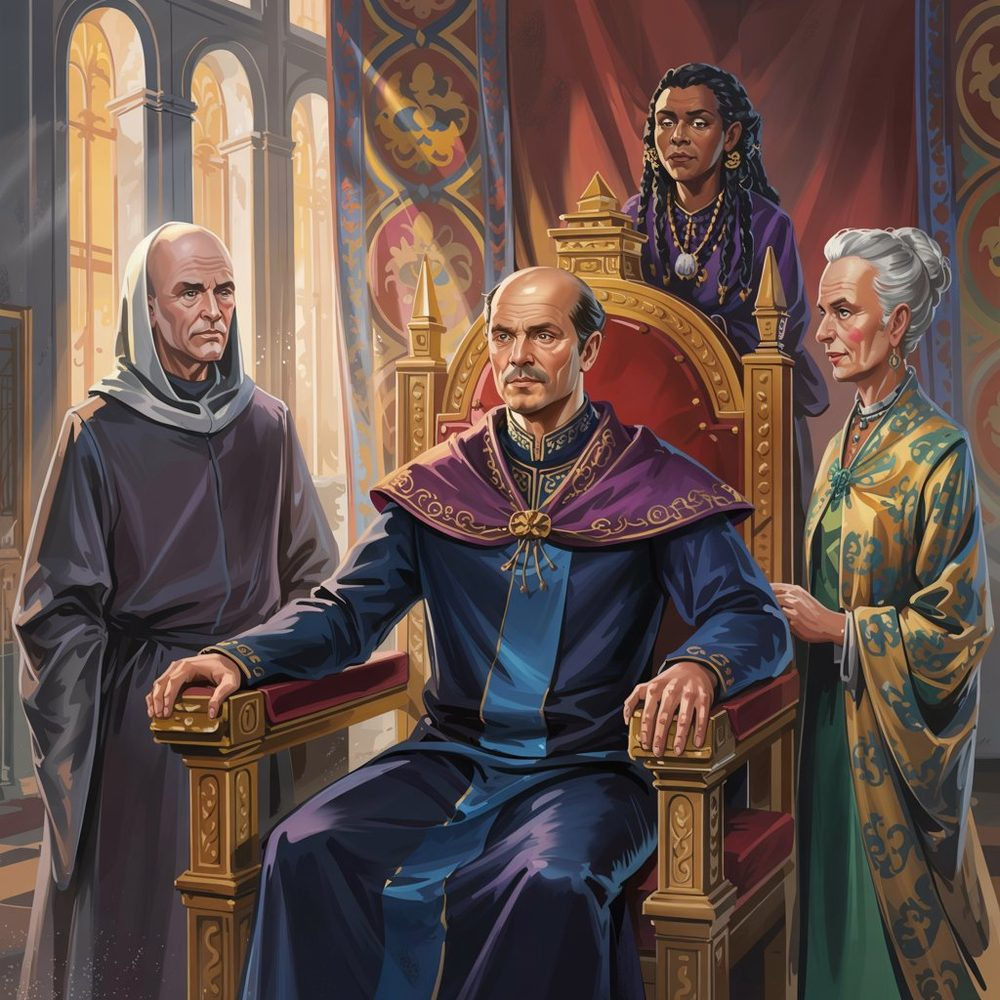

The Forest Kingdoms
Values: Purity, Loyalty
Symbol: A rose, white on pink
Characteristic classes: Ranger, Druid, Warlock
The Forest Kingdoms are a predominantly wood elf feudal realm, deeply entwined with Fey powers and strongly committed to the preservation of nature — including their own natural superiority. The realm is highly personalistic: in practice, most people speak of the High King of Roses and the lesser Kings and Queens by their flower-titles rather than of “the Forest Kingdoms” or individual “Kingdoms of Flowers” as abstractions. The preeminent kingdom, seat of the High King, is the Kingdom of Roses, and the other constituent kingdoms take their names from the flowers of their Lesser Kings and Queens.

Government
The Forest Kingdoms form a feudal structure with a significant degree of decentralisation. They are ruled by the High King, who sits on the Rose Throne. Below the High King are the Lesser Kings, with those geographically further from the Rose Demesne generally enjoying greater autonomy.
The Rose Throne
The Rose Throne is a magical rose bush shaped into a throne. A new monarch must sit naked upon it and allow their blood to flow freely from the thorns. The throne channels the spirit of the rose itself — the god of the High King — with the flowers changing colour to reflect the spirit’s emotional reactions. The thorns turn away from a monarch in tune with the spirit, while they prick one who goes against it.
Currently ruled by High King Amato III.
The Lesser Kings
The Lesser Kings are named for flowers:
King of Lilies, Lotus Queen, Queen of Tulips, King of Lavender, Queen of Orchids, King of Chrysanthemums, Queen of Carnations, Iris King, Queen of Poppies, King of Sunflowers, Queen of Jasmine — and lesser lords of the Bluebells, Snowdrops, Foxgloves, Lilacs, Thistles, and Clover.
The Band of Thorns
The High King’s elite warriors, identifiable by a tattoo of a band of thorns around the upper left arm.
Culture
Wood elves live in treetop settlements in high, magical trees. Some are built around a single massive tree, while others spread across a section of forest linked with rope bridges. To take an axe to a tree is anathema. Instead, druids have ancient ways of singing to trees to get them to shape themselves into dwelling spaces, or to create wooden tools which drop fully-formed from the branch like a fruit.
Traditionally, cutting blades were made from obsidian, although now metal tools are extensively imported. The Forest Kingdoms have no tradition of metalworking — mining is viewed as a repulsive activity beneath an elf.
Wood elves are big on trial by combat, which helps prevent their aristocratic politics (as vicious as anywhere else’s) from frequently breaking down into open war.
Wood elf druids carry a variety of jungle frogs they have befriended. The frogs produce various hallucinogenic drugs imbibed by licking them.
Elven Bowers
Each major settlement has its own character:
- Rose Bower — built around a massive tree amidst a forest of large but normal trees
- Orchid — treetop city built over a swamp
- Lilac — mushroom city
- Lily — ground-level streets, but all buildings are in or around trees
- Jasmine — city of woven grass
- Lotus — boats on the upper Great Lake and its feeder river. The Lotus elves alone cultivate trees strong enough to withstand the acidic waters. Rich prospects for conflict with The Three
- Sage — cactus city
Religion
Religion in the Forest Kingdoms is focused on local gods. Every river, town, house, and even individual tree has its own spirit to be petitioned or placated. The idea of a single, universal god (as in The Congregation) is viewed as a fundamental philosophical mistake. Everything good and holy is particular, embodied, and rooted.
Partiality for one’s own place and people is viewed as healthy; universalistic moralism is unnatural. Each place and people is expected to seek the best for itself, even to the point of warfare. Opponents are viewed as evil only when they seek to claim a higher status for their own beliefs.
The common pantheon of the Old Gods is tolerated and temples may be found in Forest Kingdoms cities, though the cultural preference remains strongly for local divinities.
Several religious cults within the Forest Kingdoms practise humanoid sacrifice, usually of captured Goblins, Orcs, or Dwarves.
Racial Hierarchy
Wood elves have a strongly hierarchical attitude to other species. Goblins and Orcs are viewed as disgusting and unnatural. Humans, Dwarves, Halflings, and gnomes are viewed as lesser than elves and are acceptable so long as they keep to their natural places. The Forest Kingdoms include several non-wood-elf vassal states of this kind.
Foreign Policy
Like the Old Dominion, the wood elves are by nature a defensive power. Their long history of resistance to imperial rule is reflected in their insular and xenophobic culture. This prevents them from taking advantage of opportunities for empire-building.
This creates an internal tension between those who would focus on the purity of their own customs and those who would seize imperial opportunities even at the cost of closer contact with other races. The more insular elves tend to be more pacific; the more cosmopolitan, more bellicose.
The Forest’s Secret
The forests are home to substantial regular incursions by aberrations from the Underdark. That the forests are always in danger of such corruption is something the elves keep secret from other races. This helps explain why wood elves are both so martially skilled and yet so slow to expand — their warriors are regularly needed against aberrant threats.
History
The Forest Kingdoms are roughly 1,600 years old (around 400 years adjusted for elven lifespans, comparable to France from 987 to 1400).
The forests were occupied by the Goblin Despotate during its expansion, leading to a brutal guerrilla war. The hulking automata of the Despotate were poorly suited for forest terrain. The goblins responded by burning many of the elven forests, creating a cycle of increasing brutality that eventually contributed to the Despotate’s fall.
The Greenspire Dwarves and the wood elves fought a vicious conflict known as the War of the Beard over tree-cutting, which ended in a costly stalemate. Cultural mistrust between the two peoples persists to this day.